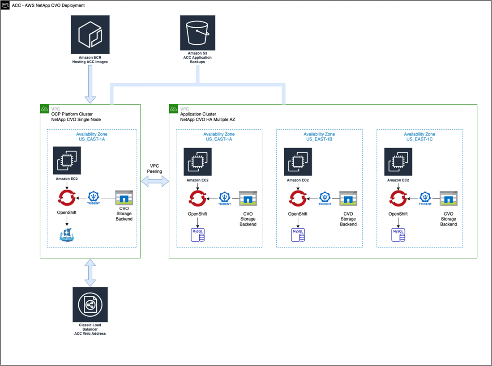
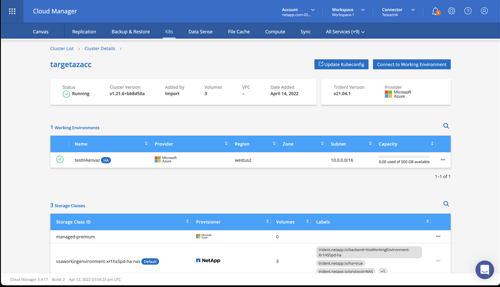

要求變更文件
要求變更文件 編輯此頁面
編輯此頁面 瞭解如何作出貢獻
瞭解如何作出貢獻安裝Astra Control Center搭配Cloud Volumes ONTAP 一套功能性儲存後端
有了Astra Control Center、您就能在混合雲環境中使用自我管理的Kubernetes叢集和Cloud Volumes ONTAP 實例來管理應用程式。您可以在內部部署的Kubernetes叢集或雲端環境中的其中一個自我管理Kubernetes叢集上部署Astra Control Center。
有了其中一項部署、您就能使用Cloud Volumes ONTAP 下列其中一項部署、以下列方式執行應用程式資料管理作業：將NetApp當成儲存後端。您也可以將S3儲存區設定為備份目標。
若要在Amazon Web Services（AWS）和Microsoft Azure中安裝Astra Control Center搭配Cloud Volumes ONTAP 使用整套儲存後端、請視您的雲端環境而定、執行下列步驟。
在Amazon Web Services中部署Astra Control Center
您可以在Amazon Web Services（AWS）公有雲上的自我管理Kubernetes叢集上部署Astra Control Center。
部署Astra Control Center僅支援自我管理的OpenShift Container Platform（OCP）叢集。
AWS所需的功能
在AWS中部署Astra Control Center之前、您需要下列項目：
-
Astra Control Center授權。請參閱 "Astra Control Center授權要求"。
-
NetApp Cloud Central帳戶
-
Red Hat OpenShift Container Platform（OCP）權限（位於命名空間層級以建立Pod）
-
AWS認證資料、存取ID和秘密金鑰、具備可讓您建立儲存區和連接器的權限
-
AWS帳戶彈性容器登錄（ECR）存取與登入
-
存取Astra Control UI所需的AWS託管區域和Route 53項目
AWS的作業環境需求
Astra Control Center需要下列AWS作業環境：
-
Red Hat OpenShift Container Platform 4.8.

|
確保您選擇裝載Astra Control Center的作業環境符合環境正式文件中所述的基本資源需求。 |
除了環境的資源需求之外、Astra Control Center還需要下列資源：
| 元件 | 需求 | ||
|---|---|---|---|
後端NetApp Cloud Volumes ONTAP 功能儲存容量 |
至少提供300 GB |
||
工作者節點（AWS EC2需求） |
總共至少3個工作節點、每個節點有4個vCPU核心和12GB RAM |
||
負載平衡器 |
服務類型「負載平衡器」可用於將入口流量傳送至作業環境叢集中的服務 |
||
FQDN |
將Astra Control Center的FQDN指向負載平衡IP位址的方法 |
||
Astra Trident（安裝於NetApp Cloud Manager的Kubernetes叢集探索中） |
Astra Trident 21.004或更新版本已安裝並設定、且NetApp ONTAP 的版本9.5或更新為儲存後端 |
||
映像登錄 |
您必須擁有現有的私有登錄、例如AWS Elastic Container登錄、才能將Astra Control Center建置映像推入其中。您需要提供映像登錄的URL、以便上傳映像。
|
||
Astra Trident / ONTAP Estra組態 |
Astra Control Center需要建立儲存類別、並將其設為預設儲存類別。Astra Control Center支援下列ONTAP 將Kubernetes叢集匯入NetApp Cloud Manager時所建立的支援功能。這些資料由Astra Trident提供：
|
|
|
這些需求假設Astra Control Center是營運環境中唯一執行的應用程式。如果環境正在執行其他應用程式、請相應調整這些最低需求。 |
|
|
AWS登錄權杖會在12小時內過期、之後您必須更新Docker映像登錄機密。 |
AWS部署總覽
以下是安裝Astra Control Center for AWS的程序總覽、Cloud Volumes ONTAP 其中包含以作為儲存後端的功能。
以下將詳細說明每個步驟。
確保您擁有足夠的IAM權限
確保您擁有足夠的IAM角色和權限、可讓您安裝RedHat OpenShift叢集和NetApp Cloud Volumes ONTAP 的連接器。
請參閱 "初始 AWS 認證資料"。
在AWS上安裝RedHat OpenShift叢集
在AWS上安裝RedHat OpenShift Container Platform叢集。
如需安裝指示、請參閱 "在OpenShift Container Platform的AWS上安裝叢集"。
設定AWS
接下來、設定AWS以建立虛擬私有雲端、設定EC2運算執行個體、建立AWS S3儲存區、建立彈性容器登錄（ECR）以裝載Astra Control Center映像、然後將映像推送至此登錄。
請遵循AWS文件完成下列步驟。請參閱 "AWS安裝文件"。
-
建立AWS虛擬私有雲端。
-
檢閱EC2運算執行個體。這可以是AWS中的裸機伺服器或VM。
-
如果執行個體類型尚未符合主節點和工作節點的Astra最低資源需求、請在AWS中變更執行個體類型以符合Astra需求。請參閱 "Astra Control Center需求"。
-
建立至少一個AWS S3儲存區來儲存備份。
-
建立AWS彈性Container登錄（ECR）、以裝載所有的主動定速控制系統映像。
如果您未建立ECR、Astra Control Center將無法從包含CVO且具有AWS後端的叢集存取監控資料。此問題是因為您嘗試使用Astra Control Center探索及管理的叢集無法存取AWS ECR。 -
將Acc映像推送到您定義的登錄。
|
|
AWS Elastic Container登錄（ECR）權杖會在12小時後過期、導致跨叢集複製作業失敗。此問題發生於從Cloud Volumes ONTAP 設定為AWS的功能的功能區（CVO）管理儲存後端時。若要修正此問題、請再次向ECR驗證、並產生新的秘密、讓複製作業順利恢復。 |
以下是AWS部署範例：

設定NetApp Cloud Manager
使用Cloud Manager建立工作區、將連接器新增至AWS、建立工作環境、以及匯入叢集。
請依照Cloud Manager文件完成下列步驟。請參閱下列內容：
-
將您的認證資料新增至Cloud Manager。
-
建立工作區。
-
新增AWS的連接器。選擇AWS做為供應商。
-
為您的雲端環境建立工作環境。
-
位置：「Amazon Web Services（AWS）」
-
類型：Cloud Volumes ONTAP 「EHA」
-
-
匯入OpenShift叢集。叢集將連線至您剛建立的工作環境。
-
選擇* K8s*>*叢集清單*>*叢集詳細資料*、即可檢視NetApp叢集詳細資料。
-
請注意右上角的Trident版本。
-
請注意Cloud Volumes ONTAP 、顯示NetApp為資源配置程式的叢集儲存類別。
這會匯入您的Red Hat OpenShift叢集、並將其指派為預設儲存類別。您可以選取儲存類別。Trident會在匯入和探索程序中自動安裝。
-
-
請注意此CVO部署中的所有持續磁碟區和磁碟區。

|
可作為單一節點或高可用度運作。Cloud Volumes ONTAP如果已啟用HA、請記下在AWS中執行的HA狀態和節點部署狀態。 |
安裝Astra Control Center
在Microsoft Azure中部署Astra Control Center
您可以將Astra Control Center部署在Microsoft Azure公有雲上的自我管理Kubernetes叢集上。
Azure的需求
在Azure中部署Astra Control Center之前、您需要下列項目：
-
Astra Control Center授權。請參閱 "Astra Control Center授權要求"。
-
NetApp Cloud Central帳戶
-
Red Hat OpenShift Container Platform（OCP）4.8.
-
Red Hat OpenShift Container Platform（OCP）權限（位於命名空間層級以建立Pod）
-
Azure認證、具備可讓您建立儲存區和連接器的權限
Azure的營運環境需求
確保您選擇裝載Astra Control Center的作業環境符合環境正式文件中所述的基本資源需求。
除了環境的資源需求之外、Astra Control Center還需要下列資源：
| 元件 | 需求 | ||
|---|---|---|---|
後端NetApp Cloud Volumes ONTAP 功能儲存容量 |
至少提供300 GB |
||
工作者節點（Azure運算需求） |
總共至少3個工作節點、每個節點有4個vCPU核心和12GB RAM |
||
負載平衡器 |
服務類型「負載平衡器」可用於將入口流量傳送至作業環境叢集中的服務 |
||
FQDN（Azure DNS區域） |
將Astra Control Center的FQDN指向負載平衡IP位址的方法 |
||
Astra Trident（安裝於NetApp Cloud Manager的Kubernetes叢集探索中） |
Astra Trident 21.004或更新版本已安裝並設定、NetApp ONTAP 版本9.5或更新版本將作為儲存後端使用 |
||
映像登錄 |
您必須擁有現有的私有登錄、例如Azure Container登錄（ACR）、才能將Astra Control Center建置映像推送至該登錄。您需要提供映像登錄的URL、以便上傳映像。
|
||
Astra Trident / ONTAP Estra組態 |
Astra Control Center需要建立儲存類別、並將其設為預設儲存類別。Astra Control Center支援下列ONTAP 將Kubernetes叢集匯入NetApp Cloud Manager時所建立的支援功能。這些資料由Astra Trident提供：
|
|
|
這些需求假設Astra Control Center是營運環境中唯一執行的應用程式。如果環境正在執行其他應用程式、請相應調整這些最低需求。 |
Azure部署總覽
以下是安裝Astra Control Center for Azure的程序總覽。
以下將詳細說明每個步驟。
在Azure上安裝RedHat OpenShift叢集
第一步是在Azure上安裝RedHat OpenShift叢集。
如需安裝指示、請參閱下列內容：
建立Azure資源群組
建立至少一個Azure資源群組。
|
|
OpenShift可能會建立自己的資源群組。此外、您也應該定義Azure資源群組。請參閱OpenShift文件。 |
您可能想要建立平台叢集資源群組和目標應用程式OpenShift叢集資源群組。
確保您擁有足夠的IAM權限
確保您擁有足夠的IAM角色和權限、可讓您安裝RedHat OpenShift叢集和NetApp Cloud Volumes ONTAP 的連接器。
請參閱 "Azure 認證與權限"。
設定Azure
接下來、設定Azure以建立虛擬私有雲端、設定運算執行個體、建立Azure Blob S3儲存區、建立Azure Container Register（ACR）以裝載Astra Control Center映像、並將映像推送至此登錄。
請依照Azure文件完成下列步驟。請參閱 "在Azure上安裝OpenShift叢集"。
-
建立Azure虛擬私有雲。
-
檢閱運算執行個體。這可以是Azure中的裸機伺服器或VM。
-
如果執行個體類型尚未符合主節點和工作節點的Astra最低資源需求、請變更Azure中的執行個體類型以符合Astra要求。請參閱 "Astra Control Center需求"。
-
建立至少一個Azure Blob S3儲存庫來儲存備份。
-
建立儲存帳戶。您需要儲存帳戶來建立容器、以便在Astra Control Center中作為儲存庫。
-
建立儲存貯體存取所需的機密。
-
建立Azure Container登錄（ACR）、以裝載所有Astra Control Center映像。
-
設定Docker推/拉所有Astra Control Center影像的ACR存取。
-
輸入下列指令碼、將Acc映像推入此登錄：
az acr login -n <AZ ACR URL/Location> This script requires ACC manifest file and your Azure ACR location.
範例：
manifestfile=astra-control-center-<version>.manifest AZ_ACR_REGISTRY=<target image repository> ASTRA_REGISTRY=<source ACC image repository> while IFS= read -r image; do echo "image: $ASTRA_REGISTRY/$image $AZ_ACR_REGISTRY/$image" root_image=${image%:*} echo $root_image docker pull $ASTRA_REGISTRY/$image docker tag $ASTRA_REGISTRY/$image $AZ_ACR_REGISTRYY/$image docker push $AZ_ACR_REGISTRY/$image done < astra-control-center-22.04.41.manifest -
設定DNS區域。
設定NetApp Cloud Manager
使用Cloud Manager建立工作區、將連接器新增至Azure、建立工作環境、以及匯入叢集。
請依照Cloud Manager文件完成下列步驟。請參閱 "Azure中的Cloud Manager入門"。
以所需的IAM權限和角色存取Azure帳戶
-
將您的認證資料新增至Cloud Manager。
-
新增Azure連接器。請參閱 "Cloud Manager原則"。
-
選擇* Azure *作為供應商。
-
輸入Azure認證資料、包括應用程式ID、用戶端機密和目錄（租戶）ID。
-
-
確認連接器正在執行、並切換至該連接器。

-
為您的雲端環境建立工作環境。
-
位置：「Microsoft Azure」。
-
輸入：Cloud Volumes ONTAP 「EHA」。

-
-
匯入OpenShift叢集。叢集將連線至您剛建立的工作環境。
-
選擇* K8s*>*叢集清單*>*叢集詳細資料*、即可檢視NetApp叢集詳細資料。

-
請注意右上角的Trident版本。
-
請注意CVO叢集儲存類別、其中顯示NetApp為資源配置程式。
這會匯入您的Red Hat OpenShift叢集、並指派預設的儲存類別。您可以選取儲存類別。Trident會在匯入和探索程序中自動安裝。
-
-
請注意此CVO部署中的所有持續磁碟區和磁碟區。
-
可作為單一節點或高可用度運作。Cloud Volumes ONTAP如果已啟用HA、請記下Azure中執行的HA狀態和節點部署狀態。
安裝及設定Astra Control Center
使用標準安裝Astra Control Center "安裝說明"。
使用Astra Control Center新增Azure儲存庫。請參閱 "設定Astra Control Center並新增鏟斗"。